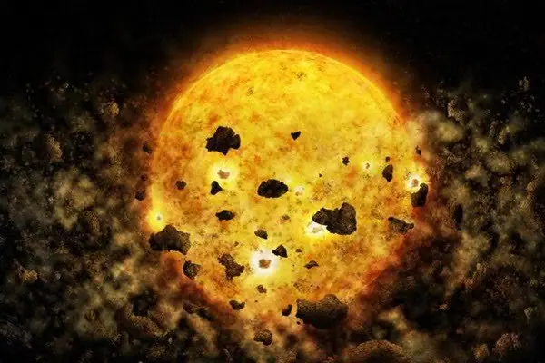

Articles ·
Astronomers Watch A Young Star Eat Its Own Planet

Astronomers generally agree that planets form out of the massive disks of leftover debris that surround most newborn stars. As these disks of gas and dust orbit their stars, small clumps of material coalesce, ultimately growing larger and larger until they eventually reach planetary status. However, not all planets make it that far. Sometimes, two nascent planets catastrophically collide — and stars apparently do not mourn their dead.
In a study published July 18 in The Astronomical Journal, a team of researchers announced they may have, for the first time ever, witnessed a star feeding on the leftover remains of one such planetary collision. These novel observations not only show that a star can devour its own planets, but also bring astronomers one step closer to fully understanding how planets form — or in this case, are destroyed.
“Computer simulations have long predicted that planets can fall into a young star, but we have never before observed that,” said lead author Hans Moritz Günther, a researcher at MIT’s Kavli Institute for Astrophysics and Space Research, in a press release. “If our interpretation of the data is correct, this would be the first time that we directly observe a young star devouring a planet or planets.”
X-ray Specs
To carry out the study, the researchers used NASA’s Chandra X-ray Observatory to watch the peculiar star RW Aur A — the largest of a pair of young, low-mass stars in the RW Aur system. The star, which is only 10 million years old and located some 450 light-years from Earth, has drawn astronomers attention since 1937, thanks in large part to the mysterious dimming episodes it experiences.
Every few decades for over 80 years, astronomers watched as the star would fade for about a month before brightening back up again. However, in 2011, astronomers noticed the star dimmed for about six months before returning to its baseline brightness. Then, just three short years later, they saw it darken again. And this time, the dimming lasted for over two years. Because RW Aur A is dimming more often and for longer periods of time, it begs the question: What is passing in front of the star and obscuring its light?
To answer this, the researchers recorded X-ray emissions from the star beginning in January 2017, as RW Aur A started another dimming event. “We want to study the material that covers the star up, which is presumably related to the disk in some way,” said Günther. “It’s a rare opportunity.”
As the X-rays passed through the disk of gas and dust that surrounds the young star, they picked up the fingerprints of the material within the disk. “The X-rays come from the star, and the spectrum of the X-rays changes as the rays move through the gas in the disk,” said Günther. “We’re looking for certain signatures in the X-rays that the gas leaves in the X-ray spectrum.”
By analyzing how the X-ray light was filtered through the star’s debris disk, the team concluded three things: The star has a lot of material surrounding it; the star is significantly hotter than expected; and, surprisingly, the star’s outer layer is loaded with iron — much more than was seen before or is found in otherwise similar stars.
“Here, we see a lot more iron, at least a factor of 10 times more than before, which is very unusual, because typically stars that are active and hot have less iron than others, whereas this one has more,” said Günther. “Where does all this iron come from?”
Iron Surplus
In the study, the researchers propose two possible scenarios to explain the significant excess of iron observed during the most recent dimming of RW Aur A.
One possibility is that the star’s disk exhibits a phenomenon known as a dust pressure trap, where a relatively placid zone forms within the disk (imagine an eddy forming in a river) and collects certain types of particles, like iron. If one of these iron deposits was present in the inner disk when the star’s binary companion (RW Aur B) passed close by and disturbed the disk, it could have resulted in a cascade of iron falling onto RW Aur A, temporarily obscuring its light and giving the star its observed excess of iron.
However, if this was the case, the dimming would presumably only occur when the pair of stars passed close by each other, which tends to happens at regular intervals. And since RW Aur A is dimming more often and for longer periods lately, this scenario is not entirely convincing.
The second possibility, which is more compelling to Günther, is that two baby planets collided at some point in the not-too-distant past. If these small worlds contained some iron, the collision would have spewed it back out into the disk (along with many other light-obscuring particles), and the star would have eventually accreted some of this material onto its surface. This scenario would likewise explain both RW Aur A’s variable dimming and its iron enrichment. But, because developing planetary systems are very chaotic places where catastrophic collisions occur frequently and commonly produce secondary collisions, Günther believes this scenario can also explain past dimming events.
Moving Forward
Unfortunately, as is often the case with science, the evidence for this planet-eating star is primarily circumstantial, and further research is needed to bolster Günther’s claim of a cosmic cannibal.
In particular, he would like to continue observing the star over the next few years to track how the iron levels change (or don’t change) over time. If the iron levels significantly drop, that would suggest whatever produced the iron was relatively small. On the other hand, if nearly the same amount of iron remains, that would suggest the material likely came from a large planetary collision.
“Much effort currently goes into learning about exoplanets and how they form,” said Günther, “so it is obviously very important to see how young planets could be destroyed in interactions with their host stars and other young planets, and what factors determine if they survive.”
This story originally appeared on Astronomy.com.
Migrated from the AUASS website archive as published, with the formatting tidied.